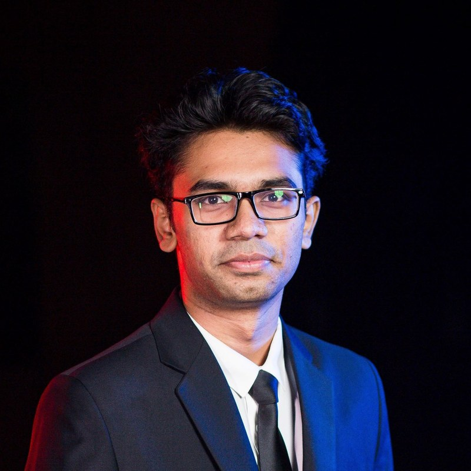

Asif Newaz
PhD Student, Queen's University
I am a Graduate Research Assistant at Queen's University and an Impact+ Scholar, supported by the Canada Impact+ Research Training Award from NSERC, Government of Canada.
I am also an Assistant Professor (on leave) in the Department of EEE at the Islamic University of Technology (IUT) in Dhaka, Bangladesh. I hold an M.Sc. in CSE with a major in Data Science, and I was awarded the Gold Medal for completing it with a CGPA of 4.00.

Education
- 2026–present
- PhD, Queen's University Started Fall 2026. Supervisor: Dr. Salimur Choudhury, GOAL Lab Canada Impact+ Research Training Award, NSERC, Government of Canada
- 2022–2024
- M.Sc. in Computer Science and Engineering (CSE), Major: Data Science, East West University CGPA 4.00/4.00, Gold Medal Thesis: Exploring New Frontiers in Imbalanced Learning: Data Complexity-Based Solutions
- 2015–2018
- B.Sc. in Electrical and Electronic Engineering (EEE), Islamic University of Technology (IUT) CGPA 3.97/4.00, 4th position
Research interests
My work centers on trustworthy, data-efficient machine learning, with applications in computer vision, healthcare and assistive technology. I develop open-source machine learning libraries, including iCost and iBRF.
- Instance-complexity-based learningUsing per-instance difficulty to weight, resample and train.
- Imbalanced and scarce dataSampling, cost-sensitive learning and ensemble methods.
- Biomedical and assistive AIDiagnosis from mobile-captured images, and Bangla Braille recognition.
- Explainable and fair AIExplainability (SHAP, Grad-CAM, LIME) for clinical models, together with fairness and bias analysis.
- Quantum AI and machine learningExploring quantum computing for machine learning, a current direction.
Selected publications
- iCost: A novel instance-complexity-based cost-sensitive learning framework A. Newaz, A. U. R. Adib, T. Jabid. arXiv preprint, 2024.
- Machine learning enabled multimode fiber specklegram sensors: a review A. Newaz, M. O. Faruque, R. A. Mahmud, R. H. Sagor, M. Z. M. Khan. IEEE Sensors Journal, 2023.
- Toward accessible dermatology: skin lesion classification using deep learning models on mobile-acquired images A. Newaz, M. M. Ishti, A. Z. M. A. Azam, A. U. R. Adib. IEEE International Conference on Signals and Systems (ICSigSys), 2025.
- iBRF: Improved balanced random forest classifier A. Newaz, M. S. Mohosheu, M. A. A. Noman, T. Jabid. 35th Conference of Open Innovations Association (FRUCT), 2024.